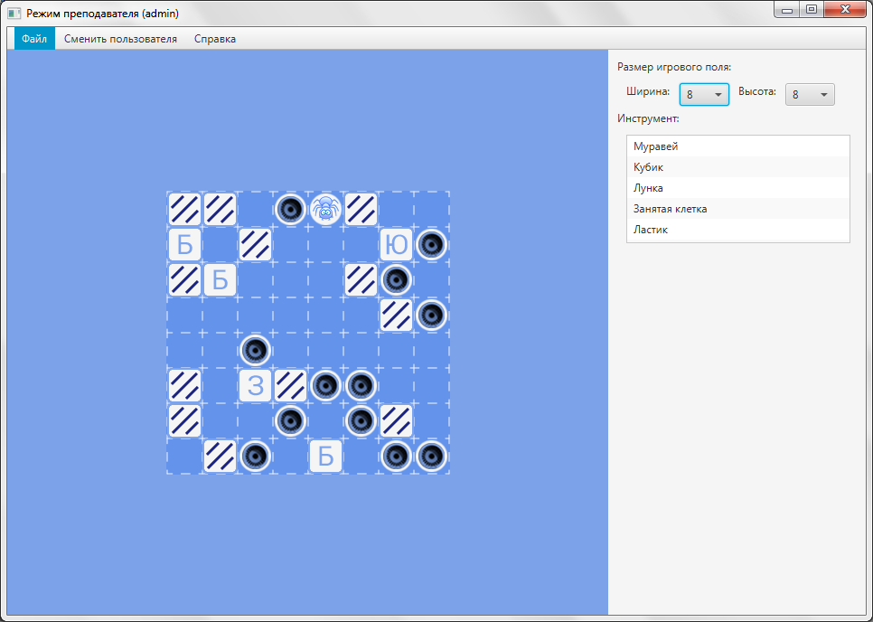

Рисунок 12 – Сообщение об успешном выполнении
Справка
3.1 Редактирование игрового поля в ручном режиме
3.2 Редактирование игрового поля в автоматическом режиме
Для начала работы с системой обучения основам алгоритмизации и программирования необходимо запустить приложение двойным щелчком по файлу game.bat.
После запуска системы откроется окно авторизации, предназначенное для выбора роли пользователя и входа в систему (рисунок 1). В данном окне можно выполнить вход в систему или зарегистрировать нового пользователя, нажав на кнопку «Регистрация».
Рисунок
1 – Форма авторизации
В случае ввода неверного имени пользователя и/или пароля, система выведет сообщение об ошибке (рисунок 2).
Рисунок
2 – Сообщение об ошибке
Для регистрации нового пользователя необходимо ввести логин, пароль и подтверждение пароля (рисунок 3).
Рисунок
3 – Форма регистрации пользователя в
системе
При нажатии кнопки «Назад» произойдет возврат к форме авторизации. Для подтверждения регистрации необходимо нажать кнопку «ОК».
В случае несовпадения пароля и его подтверждения, система выведет сообщение об ошибке (рисунок 4).
Рисунок
4 – Сообщение об ошибке
При входе в систему под ролью «Преподавателя» открывается окно, которое предназначено для создания новой карты или открытия уже существующей (рисунок 5). При нажатии на кнопку «Сменить пользователя» происходит возврат к форме авторизации. Для просмотра справки нужно нажать кнопку «Справка», в случае ее отсутствия выдается сообщение об ошибке.
Для перехода к созданию игрового поля необходимо нажать на пункт меню «Автоматический режим» либо «Ручной режим».
Рисунок
5 – Стартовое окно в режиме «Преподаватель»
3.1 Редактирование игрового поля в ручном режиме
На данной форме имеется возможность задания размеров игрового поля, выбрав соответствующие значения в выпадающих списках «Ширина» и «Высота». Так же доступен список элементов для размещения их на поле (рисунок 6). Для размещения элемента «Кубик» необходимо нажать на клавиатуре необходимую букву. Для удаления элементов доступен инструмент «Ластик». В случае превышения допустимого количества соответствующего элемента (10-20% от игрового поля), он становится недоступен.
Рисунок
6 – Окно создания игрового поля в ручном
режиме
При нажатии пункта меню «Редактировать задание» откроется окно редактирования задания, в котором доступно редактировать название задания и его описания, а так же присваивать карте уровень сложности (рисунок 7).
Рисунок 7 – Окно редактирования задания
Для сохранения созданной карты необходимо нажать в меню пункт «Сохранить карту». При нажатии на пункт меню «Закрыть карту» возвращаемся к стартовому окну режима «Преподаватель».
3.2 Редактирование игрового поля в автоматическом режиме
На данной форме имеется возможность выбрать параметры автоматической генерации, нажав на соответствующие выпадающие списки (рисунок 8).
Рисунок
8 – Окно создания игрового поля в
автоматическом режиме
При нажатии кнопки «ОК» система автоматически сгенерирует игровое поле и перейдет в режим ручного создания ИП (рисунок 9). При нажатии кнопки «Отмена» произойдет возврат к стартовому окну режима «Преподаватель».

Рисунок 9 – Окно создания игрового поля после автоматической генерации
При входе в системе под ролью «Ученик» откроется окно, которое предназначено для выбора задания. При нажатии кнопки «Сменить пользователя» произойдет возврат к форме авторизации. Для просмотра справки нужно нажать кнопку «Справка», в случае ее отсутствия выдается сообщение об ошибке.
При нажатии на пункт меню «Выбрать задание» откроется окно, позволяющее выбрать уровень сложности и задание из списка (рисунок 10). После нажатия на кнопку «ОК» переходим на окно составления программы.
Рисунок
10 – Форма выбора задания
При нажатии кнопки «Отмена» произойдет возврат стартовому окну режима «Ученик».
На форме составления программы имеется возможность выбора необходимой команды движения, перемещения кубика, обхода лунки и цикла с различным количеством повторений (рисунок 11). Для того чтобы добавить команду в код программы необходимо сначала выбрать ее из списка команд, а затем нажать на одну из кнопок «Добавить перед» или «Добавить после». Выбранная команда добавится соответственно перед или после текущей команды, на которую установлен курсор. Для записи команд внутрь цикла следует выделить в коде программы цикл, выбрать желаемую команду и нажать на кнопку «Добавить внутрь». Для того чтобы заменить команду необходимо выделить в коде команду, которая подлежит замене, выбрать новую команду из списка и нажать на кнопку «Заменить». Для удаления команды необходимо выделить ее и нажать на кнопку «Удалить»
Рисунок
11 – Окно составления программы
пользователя
Для запуска программы следует нажать на кнопку «Запуск». В случае выполнения программы без ошибок выдается сообщение об успешном выполнении (рисунок 12).
Рисунок
12 – Сообщение об успешном выполнении
Если при выполнении программы возникли ошибки, выдается сообщение с описанием возникшей ошибки. При выходе Муравья за пределы карты, система выдаст сообщение об ошибке (рисунок 13), а при попытке передвижения на клетку, занятую каким-либо другим элементом, сообщение (рисунок 14).
Рисунок
13 – Сообщение об ошибке выхода за пределы
карты
Рисунок
14 – Сообщение об ошибке перемещения
муравья
При попытке движения Муравья по лункам, выдается сообщение об ошибке (рисунок 15), а при перемещении кубика на занятую клетку, сообщение (рисунок 16).
Рисунок
15 – Сообщение об ошибке обхода лунки
Рисунок
16 – Сообщение об ошибке перемещения
кубика
При нажатии на пункт меню «Посмотреть задание» открывается окно с названием задания и его описанием (рисунок 17). Чтобы вернуться к предыдущему окну, необходимо нажать на кнопку «ОК» .
Рисунок
17 – Окно просмотра задания
Для сохранения кода программы необходимо нажать в меню пункт «Сохранить код». При нажатии на пункт меню «Загрузить код» предоставляется возможность выбрать файл с желаемым кодом.